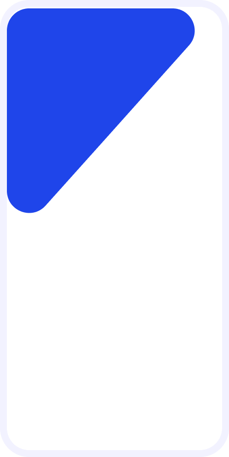
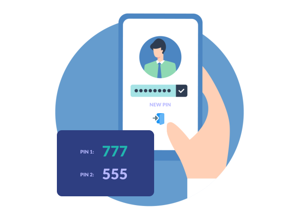
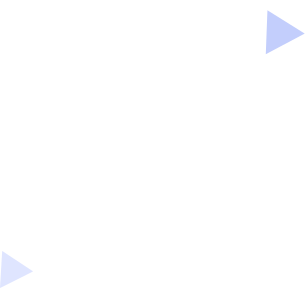
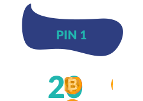
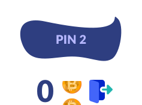
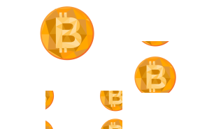
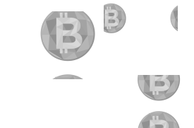
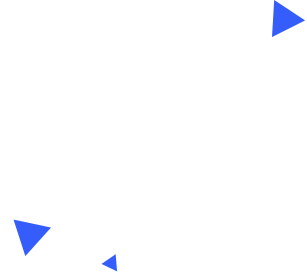
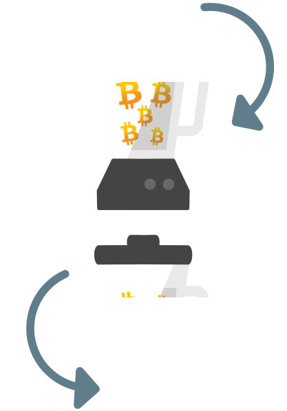

работа с резервными PINs
Чтобы использовать аварийный PIN, сначала вы должны создать его. Рассмотрим на примере, у вас уже есть аккаунт, PIN 000001 с кошельком, на котором итоговый баланс 10 биткоинов. Порядок действий следующий:
- Выйдите из приложения (два раза кнопка назад из главного меню)
- Откройте приложение
- В правом верхнем углу нажмите «создать новый PIN»
- Придумайте аварийный PIN 000002, создайте кошелек как обычно
Детальнее





миксование
Миксирование используется для разрыва связи между биткоин кошельками. Поскольку блокчейн публичен, то любой может просмотреть историю транзакций. Если у вас хранится много биткоинов, вам нужно продать какую-то часть за наличные и вы не хотите привлекать к себе лишнее внимание со стороны злоумышленников, то в подобном случае, вам необходимо использовать миксирование.
На примере, на адресе А1 у вас хранится 100 биткоинов, вы хотите продать 0,4 биткоина, для этого вы создаете операцию миксирования на 0.4, указываете процент комиссии, задержку выплаты и адрес Б2 для выплаты свежих биткоинов.
Детальнее
защита кошелька
Приложение является оффлайн кошельком. Только ваше устройство имеет доступ к ключевой seed-фразе, приватным, публичным ключам и транзакциям. При этом зашифрованный файл аккаунта хранится на сервере:
- При создании кошелька вы получаете случайный логин от сервера
- Ваше устройство генерирует случайный пароль, который хранится только у вас
- Далее вы самостоятельно создаете PIN, который не хранится в вашем устройстве
Детальнее
безопасность ключевой seed-фразы
При использовании любой криптовалюты, важно помнить о том, что ваша ключевая seed-фраза дает полный контроль над средствами. Обычно она представляет собой 12 слов из специального словаря. Реже это 18 или 24 слова. Чем больше слов тем выше безопасность, при этом 12 слов также обеспечивают достаточный уровень безопасности. А также ключая seed-фраза может иметь дополнительную защиту в виде произвольной строки-пароля. Использование этой защиты позволяет полностью исключить возможность угадывания вашего набора слов.
Детальнее
комиссия и скорость подтверждения блоков
Биткоин тесно связан с блокчейном. Когда вы отправляете перевод (транзакцию), он передается нескольким узлам биткоина, где рассылается по всей сети за несколько секунд. Таким образом ваша транзакция попадает в так называемых мемпул. Мемпул это хранилище неподтвержденных транзакций. Все транзакции, которые находятся в нем не зафиксированы в блокчейне, доверять неподтвержденным транзакциям опасно. Чтобы транзакция получила подтверждение, майнер должен добавить её в найденный блок.
Детальнее